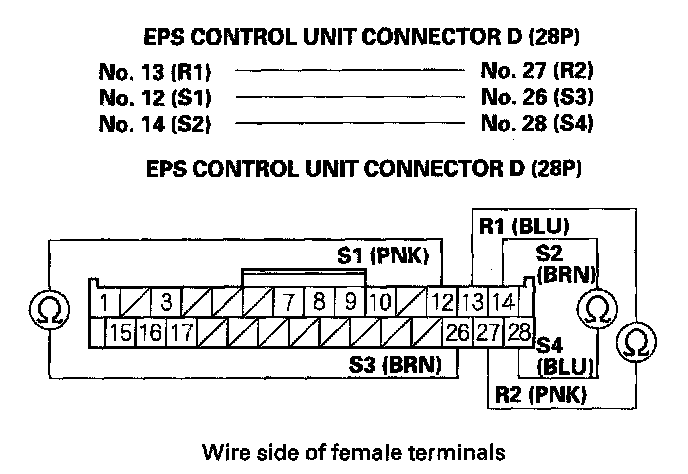
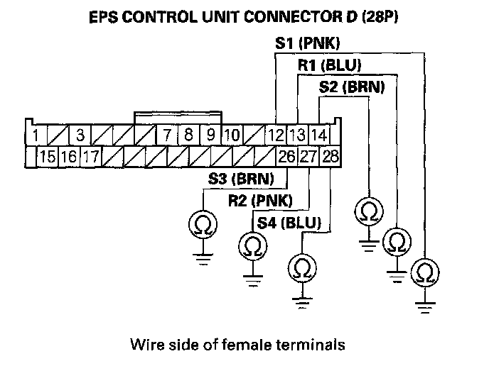
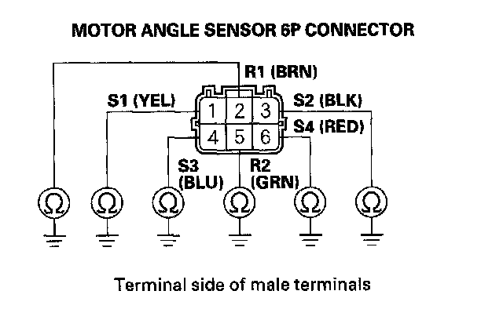
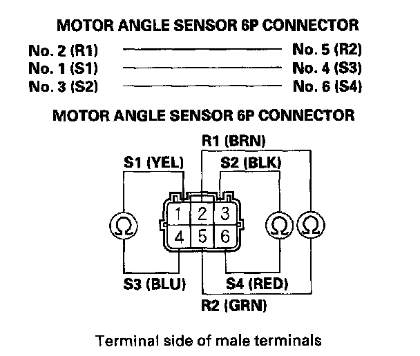

DTC 71-01
DTC 71-01: Motor Angle Sensor (SIN/COS Signals) (Steering diagnosis)DTC 71-02: Motor Angle Sensor (Neutral Position Learning of SIN/COS) (Initial diagnosis)
DTC 71-03: Motor Angle Sensor (SIN/COS Signals) (Steering diagnosis)
DTC 71-05: Motor Angle Sensor (SIN/COS Signals changing Amount) (Steering diagnosis)
DTC 71-06: Motor Angle Sensor (Neutral position of SIN/COS) (Initial diagnosis)
1. Clear the DTC with the HDS.
2. Turn the ignition switch OFF.
3. Start the engine.
4. Turn the steering wheel to the right or left, and wait 10 seconds or more.
Does the EPS indicator come on?
YES - Go to step 5.
NO - Check for loose terminals or poor connections. If the connections are good, the system is OK at this time.
5. Check for DTCs with the HDS.
Is DTC 71-01, 71-02, 71-03, 71-05 or 71-06 indicated?
YES - Go to step 6.
NO - Troubleshoot the indicated DTC. If there are no DTCs, the system is OK at this time.
6. Turn the ignition switch OFF.
7. Disconnect EPS control unit connector D (28P).
8. Measure the resistance between the following terminals of EPS control unit connector D (28P).

Is the resistance between R1-R2 13 - 25 ohms S1-S3 26 - 49 ohms and S2-S4 26 - 49 ohms?
YES - Go to step 9.
NO - Go to step 12.
9. Check for continuity between body ground and EPS control unit connector D (28P) No. 12 terminal, No. 13 terminal, No. 14 terminal, No. 26 terminal, No. 27 terminal, and No. 28 terminal individually.

Is there continuity?
YES - Go to step 10.
NO - Check for loose terminals in the EPS control unit connectors, and repair if necessary. If no poor connections are found, replace the EPS control unit.
10. Disconnect the motor angle sensor 6P connector.
11. Check for continuity between body ground and motor angle sensor 6P connector No. 1 terminal, No. 2 terminal, No. 3 terminal, No. 4 terminal, No. 5 terminal, and No. 6 terminal individually.

Is there continuity?
YES - Faulty motor angle sensor (internal failure), or short to body ground in the wire (sensor side), replace the motor.
NO - Repair short to body ground in the wire between the motor angle sensor 6P connector and the EPS control unit.
12. Disconnect the motor angle sensor 6P connector.
13. Measure resistance between the following terminals of the motor angle sensor 6P connector.

Is the resistance between R1-R2 13 - 25 ohms S1-S3 26 - 49 ohms and S2-S4 26 - 49 ohms?
YES - Open, or short to body ground in the wire between the motor angle sensor 6P connector and the EPS control unit.
NO - Faulty motor angle sensor (internal failure), or short to body ground in the wire (sensor side), replace the motor.